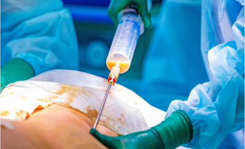
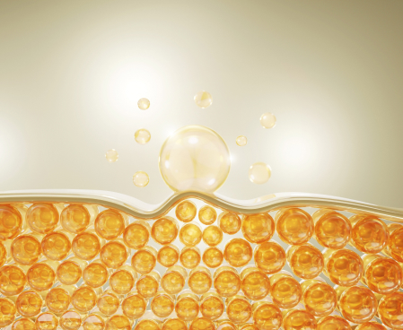
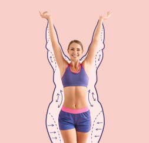

Hello. I am Dr. Hilary Jones, Professor of Medicine at the University of London. Today, I am excited to introduce a major breakthrough in modern science: the natural prolipolic formula Keto Base. The product was developed at the University of Cambridge in collaboration with MHRA (Medicines and Healthcare products Regulatory Agency). Many celebrities from the UK have personally tried and actively used this product.The recommended dose is 2 capsules, one in the morning and one in the evening. Don’t be deceived by its simple appearance; its effects are incredibly powerful.
Thanks to it, you will eliminate all unnecessary adipose tissue quickly, 100% safely, and effortlessly. Your body will suddenly become slim and firm, as if you exercised every day and followed a strict diet, but you don’t have to do any of that.
Moreover, you will transform all adipose tissue into energy! Does it sound like a miracle? A bit, but it has nothing to do with miracles. It’s pure science.
"I eat like a horse and I'm as slim as a stick!"
At work, we have a canteen where you serve yourself whatever you want, and you pay based on the weight of your plate. Since I’ve been losing weight with this prolipolic formula, which is about a month now, I eat there and take whatever I want: potatoes, steak, pasta... And I never skip dessert: flan or custard. Yum!
The colleagues who used to mock me for being fat are now eating salads and low-fat yogurt. Hungry and frustrated. And I am well-fed and satisfied! A new neighbour in the residence, quite young, asked me if I was a fitness coach because of my figure at my age. I was stunned!
Evangeline Hawthorne, 51, accountant in London
Lost 106 lbs in 12 weeks.
It's better than liposuction
Scientists jokingly refer to the prolipolic formula "liposuction in a sachet". In reality, its effects could be similar to those of surgical liposuction. However, the prolipolic formula for weight loss, unlike liposuction:
- Doesn't cost a fortune
- Presents no health risks
- Is really effective.
SURGICAL LIPOSUCTION:
- Costs at least 850 GBP
- Each operation treats only one part of the body
- It allows for a loss of about 9 pounds
- The extracted fat is thrown away
- It requires hospitalization and medical care
- The operation may cause side effects: pain, swelling, burns
- Requires a low-calorie diet afterwards
- Requires exercise afterwards
PROLIPOLIC FORMULA
Keto Base ®
- Is not associated with high costs because it is reimbursed
- You lose weight all over the body
- You lose as much weight as you want, at a rate of 27 lbs in 3 weeks.
- The body's fat is transformed into energy
- You lose weight quietly at home
- The formula is 100% safe, causes no side effects, and does not interfere with any treatment
- Does not require a diet change or alteration of eating habits
- Does not require exercise or increased physical activity
No matter why you have excess weight, the only thing that matters is that you want to get rid of it
There is no one single cause of being overweight. There are many. You may eat too much and move too little. You may have hormonal problems or illnesses that cause excess weight. Perhaps you need to take steroids or have a genetic predisposition to obesity. These are reasons why it is impossible to lose weight with diet and exercise. And you know what?
That doesn’t matter. In the case of the prolipolic formula, it doesn't matter where your excess weight comes from. Here, the adipose tissue plays the main role. It is the sole target, and the formula strikes it mercilessly... Thanks to this, you lose weight quickly, easily, and pleasantly.
No matter how serious your excess weight is. Whether you want to lose 15, 37, or 170 lbs, you will achieve your goal without problems. Put simply, the more pounds you have to lose, the longer you will need to take the prolipolic formula. Which is completely safe.
Keto Base not only helps you lose excess pounds, but also actively prevents sagging skin. With its help, you can achieve the desired results without worrying about loss of skin elasticity. The formula of our product contains components that help to improve the elasticity and nutrition of the skin and maintain its tone even during rapid weight loss. We make sure that your journey to slimness is comfortable and safe, and with our product you can be sure that your skin will remain elastic and beautiful.
One capsule can eliminate up to 100 fat cells.
The prolipolic formula is so effective at burning fat tissue because it acts at the cellular level. One capsule contains up to 100 smart molecules that disintegrate fat cells with laser precision. The molecules are programmed in such a way that 4 seconds after being absorbed by the body, they are already entering the fat cells. Once there, they trigger a very simple reaction.
When the smart molecule of the prolipolic formula reaches the fat cell, it penetrates inside and bombards it from within. Then, the fat cell disintegrates into 3 parts: an energy unit, water, and carbon dioxide. What does that mean?

This means that when you take the prolipolic formula, you transform the hated fat into energy. You give more strength to the muscles and brain, and you feel more vitality and optimism. Being active is no longer a problem for you. You no longer tire, sweat, or run out of breath climbing stairs or running to catch the bus. You feel light, and physical activity becomes a real pleasure for you.
And what about the compounds resulting from the fat cells – the water and carbon dioxide? You expel the water through urine and the carbon dioxide through breathing. It is an absolutely effective and brilliantly simple process!
"I already have six-pack abs without going to the gym even once"
I bought this treatment for my wife. I admit that when she started taking it, I laughed. Who would have thought that capsules could burn fat? But when I saw she lost more than 44 lbs, I stopped laughing. She has a flat stomach and firm buttocks. A completely new woman. With my belly, next to her, I looked like an ogre.
I started taking it too. I swear I now have six-pack abs. But it's not because I've given up beer or stopped watching games with pizza or fries. My colleagues don't believe me when I say I don't go to the gym. But I don't. Why would I?
Alistair Blackwood, 37, bus driver in Edinburgh
Lost 48 lbs in 7 weeks.
Look how easy it is:
Take a capsule of the prolipolic formula, twice a day.
It will only take you 30 seconds. Take one capsule in the morning and another in the evening. In no time, your fat will start turning into energy. You won't need your morning coffee anymore!
Burn the fat.
You will clearly feel that you have more energy and lightness. The fat starts to literally evaporate from your body. Don't forget to wear a belt, as by the evening, your trousers might already be too loose. That's how fast it works!
Enjoy a slim and firm body.
After 4-5 weeks, your scale will show 27 lbs less, or maybe even more! There will be no trace of cellulite. Your skin will be firm and smooth. You can now wear smaller sizes and receive compliments. People will ask you: "How do you eat what you want and lose weight instead of gaining it?". Be ready to answer this question... If you want to lose even more weight, keep using the formula and lose up to 150 lbs effortlessly.
"I am living a second youth!"
I've already gone through menopause, so we know that metabolism slows down. Plus, I take medication, including steroids. I was very ill and as large as a sumo wrestler. I went from nutritionist to nutritionist, from doctor to doctor. And they all told me the same thing. That I wouldn’t succeed in losing weight, that it was just the way it was and I had to accept it. One doctor even mocked me when I asked if I should take this treatment or not. He said the only thing I was going to get was a good bout of diarrhoea...
But when I came back after 3 months, 90 lbs lighter, he was speechless. He no longer knew where to hide from shame.
They wanted to convince me that there was no hope for me. I feared I would get so large that they'd have to take me out with a crane. But I took the bull by the horns. I’m slim now, and I’m living a second youth! It was worth it!
Isolde Pembroke, 68, retired in Manchester
Lost 90 lbs in 11 weeks.
It is very important: visceral fat will no longer shorten your life
Visceral fat is the fat that accumulates in your abdomen and chest. This fat adheres to your organs, such as the heart, lungs, kidneys, liver, and pancreas. Its excess is extremely harmful to these organs, preventing them from functioning properly. Moreover, it is in this fat that heavy metals and toxins accumulate, poisoning your body.
Visceral fat and the harmful substances accumulated in it deteriorate the most important organs of your body. The heart has less and less strength to pump blood, and the kidneys can no longer cleanse it... This is why it is so important to reduce visceral fat. For years, scientists have been warning that an excess of this fat reduces life expectancy by an average of 14 years.
The prolipolic formula will eliminate the killer visceral fat from your body and, with it, the heavy metals and toxins. Your organs, freed from fat and cleaned of toxins, will be immensely grateful to you. You’ll have at least 5 times more energy and feel 20 years younger!
Adipose tissue literally melts like... Butter in a pan
Imagine you put butter in a hot pan. Do you see how the fat melts? Well, that's the rate at which your adipose tissue will disappear if you take the prolipolic formula.
I’ll tell you again:
- No need to follow a diet
- No need to exercise
- No need to change anything in your life.
The prolipolic formula acts directly on fat cells. That’s why it is the only weight loss method that is so revolutionary and effective.
100% Health Safety
The fat-disintegrating molecules that make up the prolipolic formula work intelligently. They are "programmed" in such a way that they only react with fat cells. For these molecules, the other cells of the human body are invisible. This is a very important advantage. Thanks to this, the risk of the prolipolic formula harming your body is 0%. This is absolutely guaranteed and confirmed by the safety and naturalness certificate.
It is also worth mentioning a very important advantage of the prolipolic formula, especially for women. Indeed, the formula eliminates 100% of cellulite after only 30 days of use!
"No one believed I would make it..."

After my pregnancy, I couldn't get rid of the fat around my belly and hips. I also had a double chin. My mother said it was natural, but I didn’t want to believe it. I always weighed 119 lbs. Then, after pregnancy, I gained over 44 lbs. I was devastated. I tried everything: pills, shakes, going to the gym... Nothing worked. I was hopeless. So I said to myself: one last chance.
I tried the prolipolic formula... What a surprise! After a few days, my weight started to drop. After 2 weeks, I had already lost 10 lbs, and in the end, I returned to my old weight. I never thought I’d be slim again!
Seraphina Ashford, 34, retired in Bristol
Lost 51 lbs in 7 weeks.
Thanks to the prolipolic formula:
You will start transforming all the accumulated fat in your body into vital energy. Admit it, it’s a fantastic change.
You will eliminate 100% of cellulite after 30 days and start losing weight at a rate of 27 lbs in 3 weeks. You will never be embarrassed by your body again. You can proudly show yourself at the beach, go to the pool or sauna without any shame. You can wear the clothes you want, not just the ones that fit.
You will save your health! You will eliminate sediments, toxins, and heavy metals from your body. They will stop eating you from the inside. But most importantly, by eliminating excess weight, you will take pressure off your joints and prevent their degeneration. You will normalise your sugar and cholesterol levels. You will protect yourself from diabetes, atherosclerosis, stroke... You will essentially prolong your life.
There are no more obstacles to finally becoming a slim person
Surely you don’t like having stomach rumbles and having to give up the pleasure of eating. You want to eat what you love, not what you are allowed to eat. Is this an obstacle to being slim? Not anymore!
You can indulge in your favourite dishes and desserts and wear size S. You won’t have a single millimetre of cellulite on your buttocks and thighs. You can finally be a happy, healthy person with a slim body. And in just 30-45 days!
I don’t want to discourage you from exercising, but... Now you have a method with which you will burn adipose tissue without any physical effort. Your body will be so athletic that people will think you go to the gym or jog every day.
In summary, the prolipolic formula for weight loss:

It's easy to use: just take a capsule, which takes only 30 seconds a day.
Works regardless of gender, age, causes, and how long you’ve been overweight.
Guarantees radical weight loss: minimum 27 lbs in 3 weeks, while firming the skin and completely eliminating cellulite.
Does not require following a diet, exercising, or changing your lifestyle.
Protects health against severe diseases caused by excess weight and detoxifies the body.

Is 100% safe for the body and causes no side effects.
Your guarantee of victory in the fight against excess weight
The prolipolic formula burns adipose tissue faster than diets and workouts. It works regardless of the number of excess pounds, the causes of being overweight, and how long you’ve been suffering from it.
The smart molecules developed after more than 20 years of research are a real revolution in the world of medicine. Thanks to this, by choosing this treatment, you have a guarantee of absolute satisfaction.
EFFICIENCY GUARANTEE
The effectiveness of the prolipolic formula for weight loss has been proven beyond doubt across 27 laboratory studies. It has been thoroughly analysed in 9 research institutes worldwide. More than 30,000 people who have already lost weight thanks to this formula confirm its effectiveness.
QUALITY GUARANTEE
The treatment contains the prolipolic formula of unmatched quality that burns adipose tissue. You have the certainty of getting an original formula.
SAFETY GUARANTEE
The treatment with the prolipolic formula has been specially designed to act only on fat cells. It does not affect any other cells in the human body. Keto Base is fully approved by the FDA. Scientific research unequivocally shows that the risk of side effects after treatment is 0%.
Everyone deserves health and beauty
If the prolipolic formula had been developed a few years earlier, it would have avoided a lot of suffering. How many people have suffered from diabetes or atherosclerosis due to being overweight and died prematurely? How many people continue to suffer from joint pain, sleep apnoea, weakened hearts... How many people struggle every day with anxiety or depression caused by yet another weight loss failure.
Fortunately, all this is over! It's the end of suffering. Everyone deserves a slim and healthy body. Everyone deserves to be proud of their appearance.
It's up to you to decide: do you want to lose up to 27 lbs in 3 weeks effortlessly?
Start the change for the better. Get what you deserve: health and a happy life. Fill out the order form to get the prolipolic formula under a non-refundable grant.
I guarantee that in 21 days, you will look in the mirror and see a person 27 lbs lighter. Then, you will smile and see happiness in your eyes. You will say to yourself: "YES, it was the right decision!". And you will be very grateful for it.